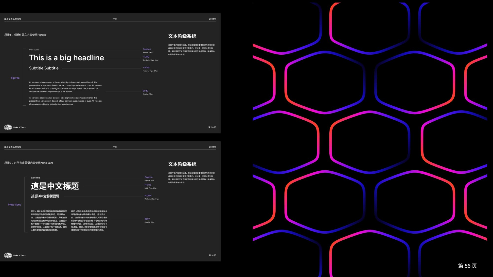
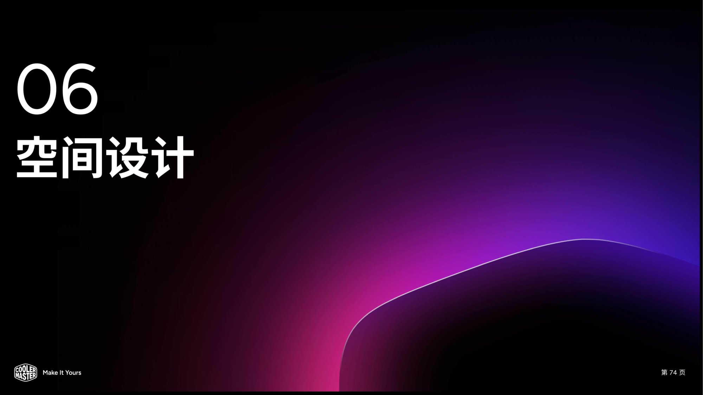
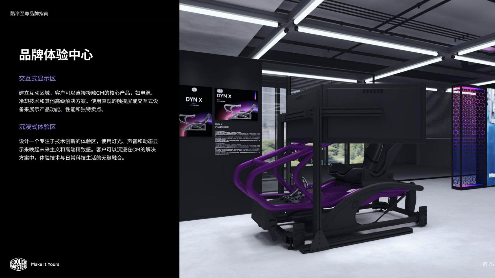
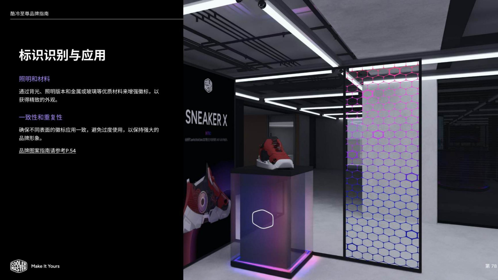
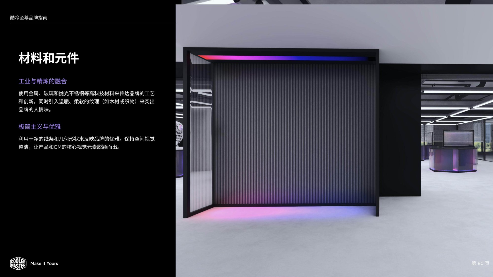
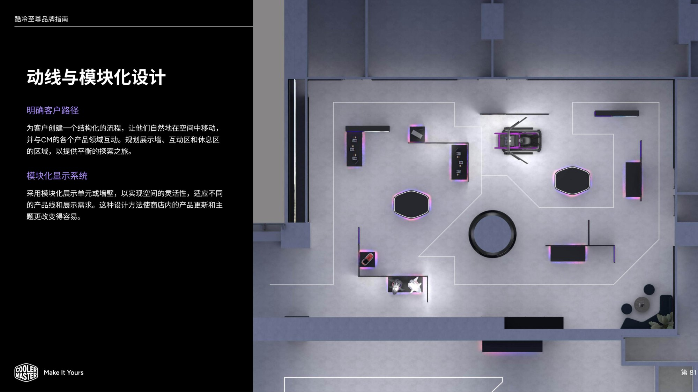

works / cooler master
酷冷至尊 CoolerMaster
COOLER MASTER · 品牌识别系统 2024 / BRAND IDENTITY SYSTEM
酷冷至尊 2024 品牌识别系统（V1.1）：以「内部创新优雅工艺 / 外部充满活力专业多样」为品牌形象核心，建立 OneCM 统一颜色系统（CM 紫 / 黑 / 白 / 渐层色）与中英文文本阶级系统（Figtree / Noto Sans），并将 VI 延展至线下空间——空间设计、品牌体验中心（交互式显示区 / 沉浸式体验区）、标识照明与材质应用、材料与元件、动线与模块化陈列，形成从平面规范到空间体验的完整品牌识别提案。

品牌识别系统 2024 V1.1 / Brand Identity System Cover
深色封面以品牌紫色光效与品牌图形语言开场，定义酷冷至尊 2024 品牌识别系统的整体基调。

品牌形象与 OneCM 颜色系统 / Brand Image & OneCM Color System
定义品牌内在「创新 · 优雅 · 工艺」与外部「活力 · 专业 · 多样」的双层形象；以 OneCM 统一颜色系统承载 CM 紫 / 黑 / 白与渐层色，让颜色成为可管理、可延展的品牌资产。

文本阶级系统与图形语言 / Typography Hierarchy & Graphic Language
英文 Figtree、中文 Noto Sans 构成完整文本阶级，配合蜂窝状图形纹理，统一中英文排版秩序与图形气质。

空间设计 章节页 / Chapter 06 · Spatial Design
以品牌紫色光效延续视觉语言进入「空间设计」章节，为 VI 从平面走向线下空间做章节过渡。

品牌体验中心规划 / Brand Experience Center
规划交互式显示区、沉浸式体验区等功能分区与产品演示场景，让用户沉浸式感知品牌与产品。

标识识别与应用 / Logo Identification & Application
规范品牌标识在展陈中的照明与材质应用，确保标识在不同空间环境中的识别一致。

材料与元件 / Materials & Components
展厅空间中金属、玻璃等材料的质感与使用示意，衔接工业产品语言与建筑空间表达。

动线与模块化设计 / Circulation & Modular Display
从展厅平面布局、参观动线到模块化陈列系统，展示空间如何通过标准化元件灵活组织、高效复用。